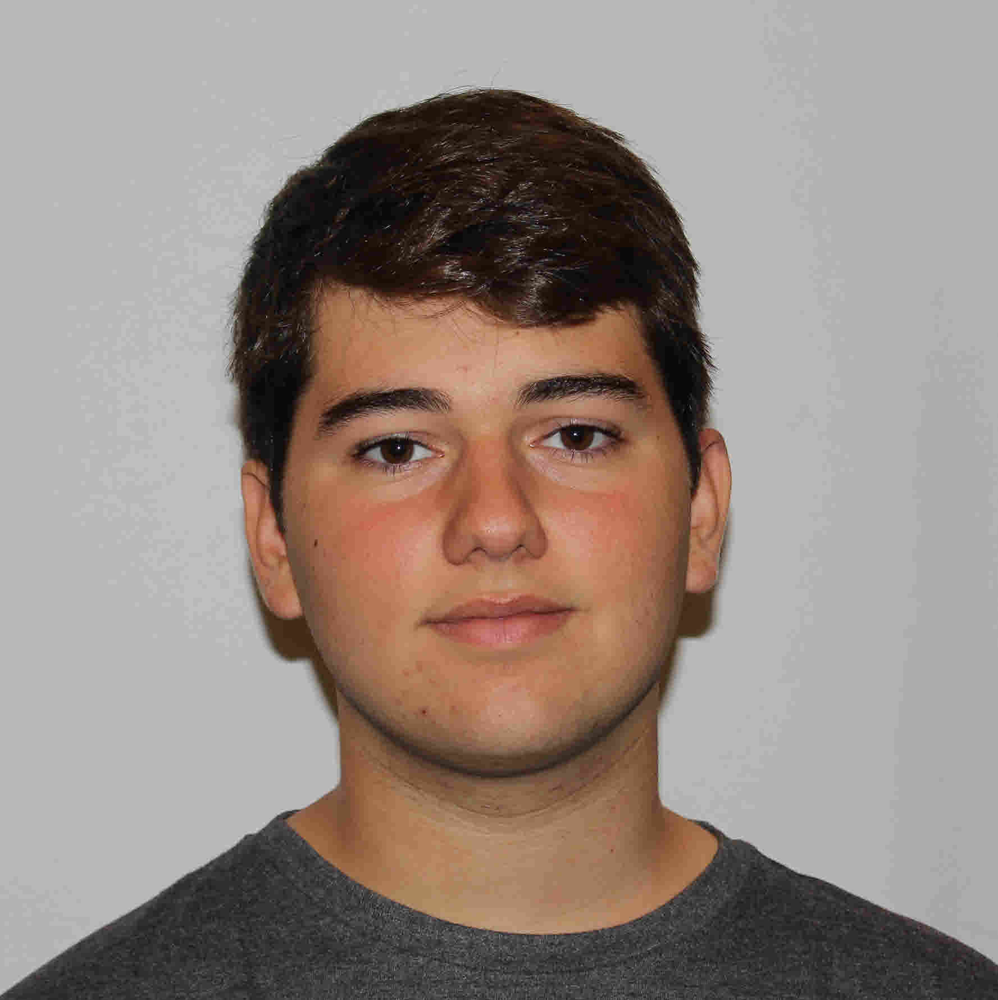

Hi there! I'm Roberto Chadwick, and I started becoming interested in graphic design in middle school. Some of my friends were starting YouTube channels and needed art, from profile pictures to YouTube banners to short animated Intros. I installed Photoshop and started fiddling with images and the rest is history. I was hooked, and I kept making forward progress as a self-taught artist, even going so far as to start my own business (Chadwick Design, formerly RobertoDraws). After being accepted to Fairfield College Preparatory School in the 9th grade, I met my art teacher, Robert Fosse-Previs. A graphic designer, Mr. Fosse suggested I learn some of the other apps in the Adobe Suite. I began working with him independently on InDesign and Illustrator. As a sophomore, I enrolled in Studio Art and then, as a junior, began to design my own website as a means to showcase my artwork. At this point, I have learned that in order to be an artist, I have to accept that I will never stop learning; though I know that continuing to build my portfolio and website will be a challenge, it is one that I excitedly take on.
I hope you enjoy my work.
Roberto Tomas Chadwick Saldaña